|
MachV/Mozilla: Mail: Compose |
UI Specification
|
|
Message Compose |
Last
Modification:
|
|
Author: Jennifer Glick |
Status: Mostly Complete |
||||||||||
|
Quicklinks: Design DetailsTitle Bar |
Feature Team:
Please post all comments and suggestions regarding this spec to the newsgroup, netscape.public.mozilla.mail-news. |
This document covers the Mail Compose window. Examples are shown in the "Modern" skin. Other skins may vary slightly :-).
Basic Tasks
- Compose a message in Plain text
- Compose a message in HTML
- Reply to a mail message
- Forward a mail message
- Add a Subject line
- Addressing a message to a raw email address
- Addressing a message to an Address Book entry using auto-complete feature
- Use the autocomplete dropdown to select a unique email address from a list of matches
- Send a message as: To, Cc, Bcc, Newsgroup, Reply-to, Follow-up or Newsgroup
- Spell check
- Set Priority of message
- Add recipient from the Address Book
- Print a message
Intermediate Tasks
- Save a message as a Template
- Save a copy of a sent message in a user specified folder
- Attach a local file
- Attach/send a web page
- Attach a signature file
Attach a vCard- Save a message as a file
- Save a message as a draft
- Request Return Receipt
- If multiple accounts, specify who the message is "From"
- Modify Mail Preferences (Default reply behavior, etc.) (in the Preferences area)
- File Carbon Copy
Advanced Tasks
- Edit the HTML source code
- Encrypt a message
- Sign a message
- Use a non-default SMTP server
- Set Advanced Mail Preferences
Access points in the Main Mail window for the Compose Message window:
Toolbar
Menu
Msg Context Menu
New Message
Reply
Reply All
ForwardFile Menu
New Message
New --> MessageMessage Menu
New Message
Reply
Reply to all
Forward
Forward As ( Inline, Attachment)
Edit Message as NewMessage selected:
Reply to Sender
Reply to All
Forward
Edit as New
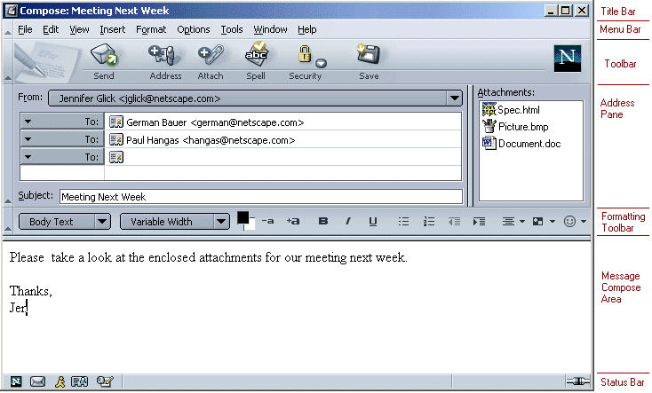
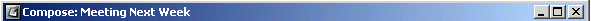
When the user begins a new message, the Title Bar reads "Compose: (no subject)" in bold. As the users types the subject of the email, the Title Bar is updated to reflect the subject being typed.
The Menu Bar items are as follows:
|
File |
Edit |
View |
Insert |
Format |
Options |
Tools |
Window |
Help |
Please see the Message Compose Menus UE spec for details about the menu contents.
Tool Bar buttons and their order:
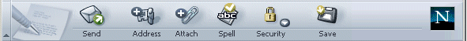
|
Button |
Functionality |
|
Send |
Sends the current message. If the user on online, the messages is sent right away. If the user is off-line, the Send button performs the "Send Later" action: the message is saved to the "Unsent Messages" folder. Accelerator key: "Ctrl+Enter". There is an invisible preference to disable the accelerator. |
|
Address |
Opens the "Select Addresses" dialog used to select recipients. (See Address Book spec) |
|
Attach |
Used to attach a File or Web Page to a message. Default is a File. Not implemented: Dropdown widget to the right displays File or Web Page. |
|
Spell |
Opens the "Check Spelling" dialog. |
|
Security |
Opens "Message Security" dialog. Dropdown: displays Encryption and Signing options. |
|
Save |
Clicking on the button saves the current messages as a Draft. Not implemented: Dropdown widget allows the user to choose whether to save the message as a File, Draft or Template. Default is Draft. |
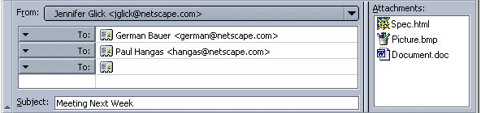
The "Addressing" area displays a vertical scrollbar once more recipients than can be displayed all at once are added. A horizontal scroll bar is NOT used in the "Addressing" area. Three addressing lines are displayed as the default. The separator widget below the Formatting Tool Bar can be dragged to increase/decrease the size of the Addressing area. Likewise, the separator widget between the Addressing area and the Attachment area can be dragged for resizing.
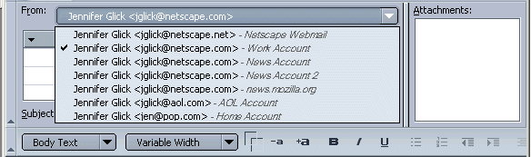
The "From" menu is a non-editable dropdown list which can be used to select from which account a message will be shown as "From". If a user has setup multiple Mail or Newsgroup accounts, a list of available accounts is displayed in this menu.
Since different accounts might have the same or similar personal names and/or email addresses, the user defined name of the account is also shown in gray italics to help users distinguish between accounts. The user defined account name is not displayed as part of the message header when messages are sent (i.e., "Netscape Work Account").
If the the user chooses a "From" account to which they are currently not logged into the server, and they have turned on the "Save a copy in my Sent Folder (on server)" preference, the following dialog is displayed: "You are not logged onto account <name>. A copy of this message will be saved in your Local Sent folder."
If the user has multiple accounts, has a specific account or account folder selected and then selects "Compose", the "From" field is based on the account or account folder currently selected.
If the user has multiple accounts, does not have a specific account or account folder selected, and selects "Compose", the "From" field is based on the default account.
If the user has multiple accounts and Replies to or Forwards a message, the "From" field for the new message corresponds with the identity of the original message.
If the user has multiple accounts, moves a message from a folder associated with a specific account to a folder associated with a different account, and then Replies to or Forwards that message, the "From" field for the new message corresponds to the identity associated with the account to which the message was moved.
The Attachments area appears to the right of the Addressing area. Clicking into the attachment area (but not clicking on a file already attached) causes the file "Attach" dialog to open. The Attachment field has a vertical scroll box if not all attachments are visible. A horizontal scroll box is NOT displayed if an attachment can not be seen completely horizontally. Instead, ToolTips, showing the complete file name, are displayed when the user mouses over an attachment.
The Subject Field is used to enter the name of message being composed. If no subject has be specified and the user attempts to Send the message:
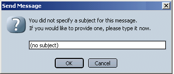
The Ender Toolbar component is an important part of the Message Compose window. It is important that this toolbar not be overwhelming with features, but be clear and provide easy access to the most commonly used HTML editing features that users might want while composing a mail message.
The toolbar contains: Style Menu, Font Menu, Foreground and Background Color, Increase Font, Decrease Font, Bold, Italics, Underline, Bullets, Ordered List, Out Dent, Indent, Alignment menu, Objects menu.
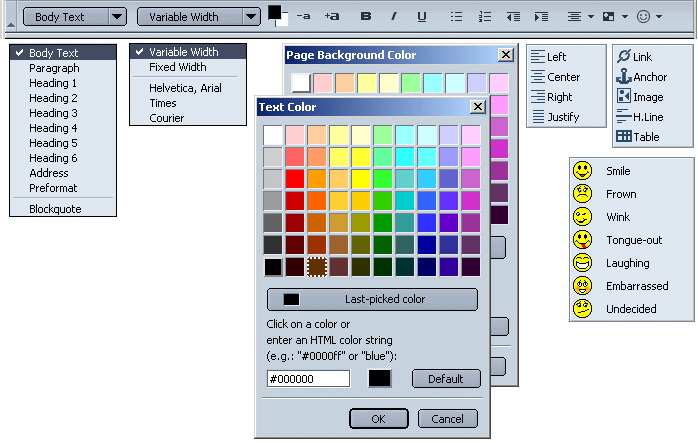
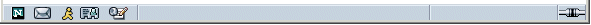
Within the Message Compose Window, the Status bar area is used to indicate online/offline status, message sending progress, and any special functionality that their mail message contains.
The Online/Offline icon is displayed in the right corner, indicating the current connection. Clicking the icon toggles the connection between online and offline.
When the user Sends the mail message, the compose window remains on the screen until the message is completely sent (A modal progress dialog appears on top of the window). The status bar displays the current status of the send operation. For most messages, the Compose window will disappear very quickly, but for some messages which may take longer to send, (such as large messages, messages with large attachments or when using a slow internet connection) the status bar gives the user valuable feedback.
Any additional functionality the user has selected for this message will also appear in the status bar area. This includes: File Sent Message (Fcc), Priority not equal to Normal, Return Receipt (not yet implemented), Security features (not yet implemented), etc.
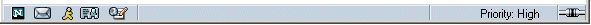
|
|
|
|
|
|
Priority |
Normal |
Very Low, Low, High, Very High |
"Priority: High" |
|
Return Receipt |
Not selected |
Selected |
"Return Receipt" |
|
File Sent Msg (Fcc) |
Not selected |
Folder selected |
"File: 'Fred' " |
|
Digital Signature |
Not selected |
Selected |
"Digitally Signed Icon" |
|
Encryption |
Not selected |
Selected |
"Encrypted Icon" |
Files can be included within mail messages as either Inline Text or as Attachments.
Attached files are displayed within the attachment area (and not displayed inline). Files can be attached using several methods.
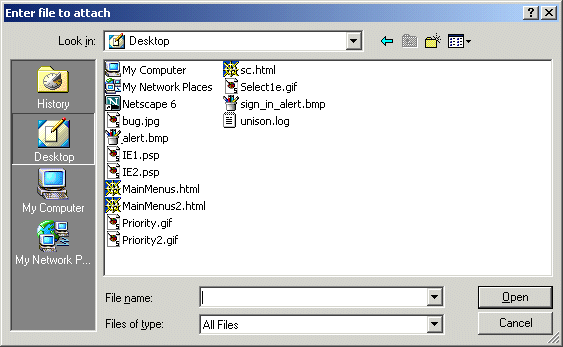
Files included inline are displayed inline within the message body during compose (and not displayed in the attachment area). Files can be included inline using several methods:
In plain text message composition, files can be included as attachments but inline inclusions of files is not available.
The "Attach Web Page" dialog is opened by:
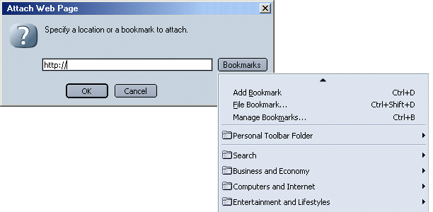
The user can enter in a URL or use the Bookmarks menu button to select an item directly from their personal bookmarks. The bookmarks dropdown menu makes it easier for users since they don't have to try and recall a URL from memory. (Not Implemented Currently). Selection of a folder is NOT allowed (the dropdown stays open with menu fly outs until the user selects a bookmark or clicks off of the dropdown menu.
The default text "http://" appears in the text entry field. This gives users a better idea what is expected in this text field and it is also very likely that the desired URL will start this way, so it saves them some time.
The URL box inside the attach web page features the same auto complete that the URL box in the browser does. In addition, a user can drag and drop a file onto the URL box to attach the file. (Don't believe this is currently implemented.)
With in the global preferences area, users can select how they want attachments to behave at viewing time.
Users would also be able to override their global preference on a per message basis by using the "View" menu.
The following table outlines the possible actions users could perform and their resulting actions:
|
File Type |
Action |
Show in Attachment Pane |
Show Inline |
Show as Link |
Alternate Method or Behavior |
Comments |
|
Native Graphic File (jpg, gif) |
Drop onto attachment area. |
Yes |
No |
No |
"File -> Attach" menu, or "Attach" button. |
|
|
Native Graphic File (jpg, gif) |
Drop onto message body. |
No |
Yes |
No |
"Insert -> Image" menu, or "Insert -> Image" from Ender toolbar. Right mouse click within the compose area, "Insert new link". |
|
|
Native Graphic File (jpg, gif) |
Special Key + drag and drop onto message body. |
No |
No |
Yes |
||
|
Native Graphic File (jpg, gif) |
Right Mouse drag & drop onto message body. |
Maybe |
Maybe |
Maybe |
A popup menu with options is displayed. (Insert as attachment, Insert inline, Insert as link, Cancel) |
|
|
HTML File (local or networked) |
Drop onto attachment area. |
Yes |
No |
No |
"File -> Attach" menu, or "Attach" button. |
Relative graphic links included. Absolute graphic links not included. |
|
HTML File (local or networked) |
Drop onto message body. |
No |
Yes |
No |
Relative graphic links included. Absolute graphic links not included. |
|
|
HTML File (local or networked) |
Special Key + drag and drop onto message body. |
No |
No |
Yes |
"Insert -> Link" menu, or Ender
Toolbar |
|
|
HTML File (local or networked) |
Right Mouse drag & drop onto message body. |
Maybe |
Maybe |
Maybe |
A popup menu with options is displayed. (Insert as attachment, Insert inline, Insert as link, Cancel) |
|
|
Bookmark |
Drop onto attachment area. |
No |
No |
Yes |
Drop onto message body not allowed (cursor changes to circle with line). |
|
|
Page Proxy Icon |
Drop onto attachment area. |
No |
No |
Yes |
Drop onto message body not allowed (cursor changes to circle with line). |
|
|
Non-Native File (Word, Excel, etc.) |
Drop onto attachment area. |
Yes |
No |
No |
Drop onto message body not allowed (cursor changes to circle with line). |
|
|
Non-Native File (Word, Excel, etc.) |
Special Key + drag and drop onto message body. |
No |
No |
Yes |
||
|
Non-Native File (Word, Excel, etc.) |
Right Mouse drag & drop onto message body. |
Maybe |
No |
Maybe |
A popup menu with options is displayed. (Insert as attachment, Insert as link, Cancel) |
|
|
Address Book Entry Icon |
Drop onto attachment area. |
Yes - Attach vCard |
No |
No |
Drop onto message body not allowed (cursor changes to circle with line). |
|
|
Address Book |
Drop onto attachment area. |
Yes |
No |
No |
||
|
Message or Thread Icon |
Drop onto attachment area. |
Yes - attach message |
No |
No |
Drop onto message body not allowed (cursor changes to circle with line). |
This feature allows users to save a copy of a message being sent to a specified folder on a per message basis. If the user already has the "Save a copy in my Sent (or other folder) folder" preference turned on, the Fcc is an additional saved copy. Since this is a feature intended for more advanced users, it is accessible via a menu dropdown only ("Options" menu).
Basic functionality:
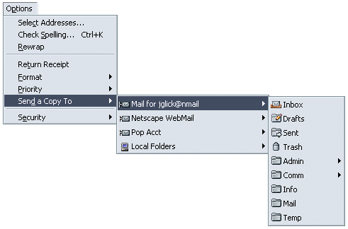
The "Options --> Format" menu is used to override the message format on a per message basis. When the user opens a new Mail Compose message, "Auto Detect" is always selected by default. The menu item is provided to offer users a method to override the default setting on a per message basis. The Options/Format menu "Auto Detect" setting really means: if the combination of the formatting I've used and the preferences I've set and the addressees I've used doesn't make it obvious what the program should do, then ask me what to do. It means that the program should try to apply it's automatic logic and only if that logic can't figure out what to do should it ask.
For example, I normally have it set to ask me, but I know for this particular message that the person can only read plain text, so I change to format to plain text right here. Note: If the drop down is changed to "Plain Text only" the Ender Toolbar is disabled.
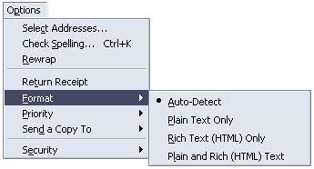
Default behavior. Text of message being forwarded appears in the body of the message. Caret defaults to the top of the message.
The message being forwarded is shown in the attachment area of the message. The name of the attachment is the name of the message being forwarded and the Mail app icon is displayed.
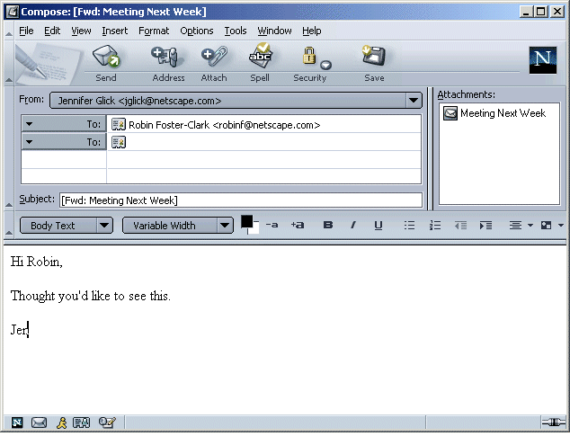
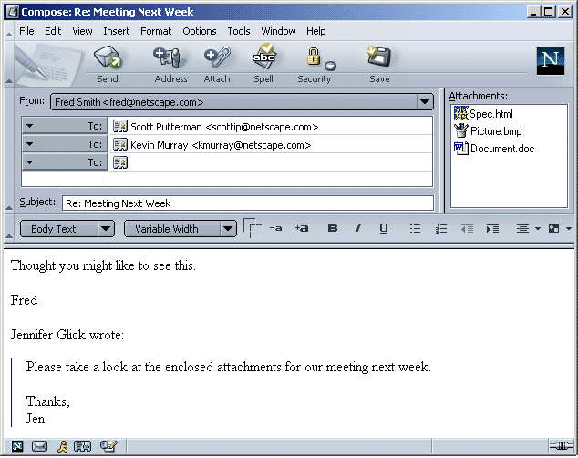
Default for Netscape: "Automatically quote the original message when replying" is checked. "Then, start my reply above the quoted text".
Default for Mozilla: "Then, start my reply below the quoted text".
When sending a message is in progress, the following modal dialog appears on top of the Compose window. Cancel can be used to stop the current send operation and return focus to the Compose window.
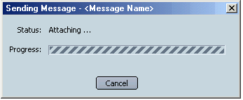
Auto-completion functionality will be added to newsgroup addressing. The most recently addressed newsgroups will be remembered and auto-populated as the user types. (Nice to have feature, but don't know if/when it will be implemented. )
Please see the Message Compose Menus UE spec.
|
Condition |
Message |
Buttons |
|
If the the user chooses a "From" account to which they are currently not logged into the server, and they have turned on the "Save a copy in my Sent Folder (on server)" preference. |
"You are not logged onto account <name>. A copy of this message will be saved in your Local Sent folder." |
OK |
|
The user is offline and Sends a mail message. |
"You are currently offline. The message will be saved to you "Unsent Messages" folder." Checkbox: Don't show me this dialog again. |
OK |
|
User closes the Mail Compose window without sending the message. Note: A Subject, attachment or text body must be entered before this dialog will display. |
"The message has not been send. Do you want to save it in the Drafts folder? |
Save |
|
Item |
Priority |
|
"Fax to" addressing option. |
|
|
Message Preview. |
|
|
|
|